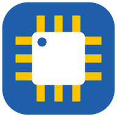

LCSC2Fusion
Add LCSC parts to Fusion Electronics as symbol and footprint
Settings
Info Connecting to Fusion...
No search yet
Results appear here with stock and a link to the LCSC page. Parts you add are listed below them.
Results
| LCSC | MPN | Type | Manufacturer | Package | Stock | Description | Datasheet | Action |
|---|
No parts found
Check the LCSC number, or try fewer words, for example "0603 100nF".